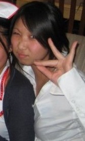

Sherry "X-tasy" Cho

Name: Sherry Cho
Nickname: X-tasy
Birthday: 02/28/89
Ethnicity: Korean!
Hometown: Bayside, NY
Lineage: Tulips
Big: Christine "Intrigue" Park
Little: Audris "tetris" Teh
Favorite Quote: "The saints and poets maybe.. they do some." -Thorton Wilder
Best thing about aKDPhi: Always having someone to eat with!!